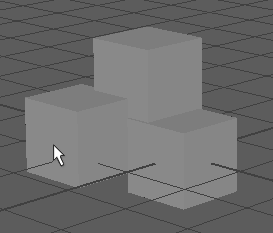
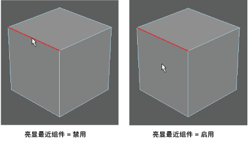
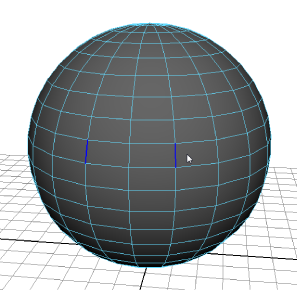

通过从标记菜单（在场景中按住 Ctrl + Shift 键并单击鼠标右键）中选择，可以切换“选择前亮显”(Preselection Highlight)。
启用
“选择前亮显”(Preselection Highlight)后，可以先高亮显示组件，然后再实际选择这些组件。当移动光标靠近组件时，彩色亮显会显示在最近组件上。

“选择前亮显”(Preselection Highlight)适用于所有组件选择模式（“顶点”(Vertex)、UV、“边”(Edge)、“面”(Face)或“多重”(Multi)，但仅支持多边形对象。
选择组件前亮显组件
- （可选）激活“软选择”(Soft Selection)（热键：B）可亮显网格的某个区域。
- 选择网格。
- 将光标拖到网格上。
Maya 会自动亮显最近组件。
默认情况下，在
建模工具包和
“选择工具”(Select Tool)设置中启用
“亮显最近组件”(Highlight Nearest Component)。禁用
“亮显最近组件”(Highlight Nearest Component)时，仅当将光标放置在组件顶部时才会亮显它们。

提示： 禁用“工具设置”(Tool Settings)中的“亮显背面”(Highlight backfaces)可仅亮显面向摄影机的那些组件。
对称选择前亮显
如果“对称”(Symmetry)处于打开状态，并将光标在整个网格中拖动时，Maya 将亮显最近组件和网格另一侧上的相应组件。
